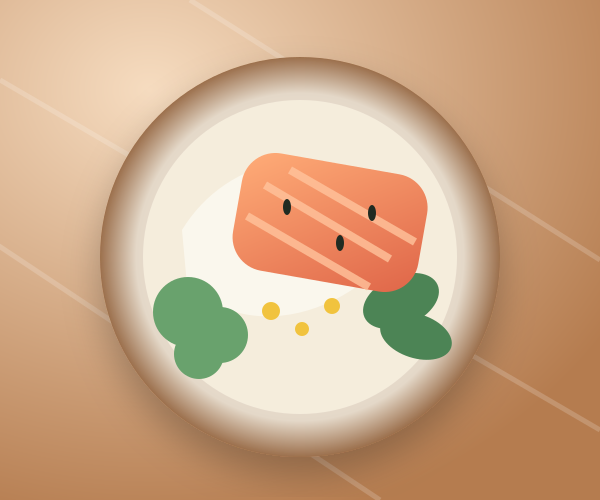

Cover image
Miso Salmon Bowl
Sweet-savory salmon, rice, and whatever greens are around.
8 cooksoccasions
12 photossources
Jul 18last made
✎
LATEST NOTE · JUL 18
Broil for the last 2 minutes—the crispy edges made it way better.
RecipeNotes · 3History · 8
Ingredients
Salmon fillets
2 pieces · about 6 oz each
White miso + maple
2 tbsp + 1 tbsp
✨ AI-assisted recipe. Review ingredients and cooking safety before use.